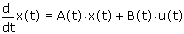

statespace(init, t1, t2, npoints, A, [B], [u]) Returns the solution to a system of linear, first-order ordinary differential equations of the following form:

where
x(t) is a vector of unknown states.
A(t) is the coupling, or state matrix between the functions in the vector x(t).
B(t) is an input matrix that describes the coupling between terms in the input vector u(t).
u(t) is the input vector.
Note: This notation, in which x(t) represents a vector of unknowns for the independent variable t, differs from the notation used in the Help pages for the other ODE solvers, in which the letter x represents the independent variable and y(x) represents the vector of unknowns.
Arguments
init is a column vector of initial conditions, whose length is the number of unknown states.
t1 is a real number specifying the starting point of the integration interval.
t2 is a real number specifying the ending point of the integration interval.
npoints is the integer number of points beyond the initial point at which the solution is to be approximated. The number of solutions returned is npoints + 1.
A is an n×n matrix function of the form A(t), where n is the number of unknown states. The entries of A(t) are functions of the independent variable t.
B is an optional matrix or vector function of the form B(t), whose entries are functions of t. B(t) can be either
an n×n matrix, in which case you must also provide the input vector u of length n. Alternatively,
B(t) can be an n×1 column vector, in which case u(t) must be a scalar function.
u is vector or scalar function of the form u(t), whose entries are functions of t.
Note:u is required if you provide the argument B.
statespace returns an (npoints + 1) × (n + 1) solution matrix, where n is the number of unknown states. The first column of the matrix contains the values of t at which the solutions are evaluated. These values are npoints + 1 evenly spaced numbers between t1 and t2. The remaining columns contain the values of the solutions x0, x1, ..., xn - 1 corresponding to the values of t in the first column.